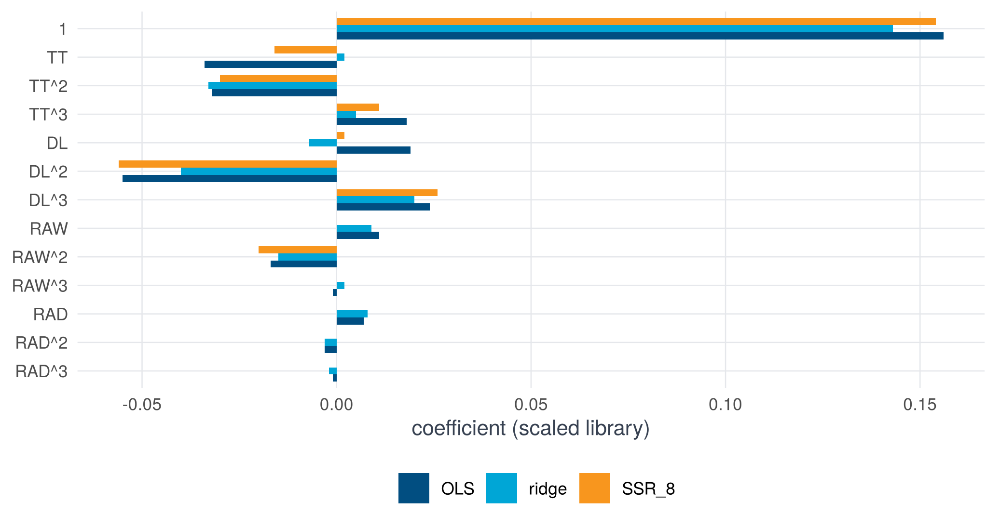

st <- sum_years(gram, seq_along(tr$years)) # add up all years, keep genotypes apart
A <- apply(st$A, c(2, 3), sum) # add up genotypes too
b <- colSums(st$b)
sc <- scale_gram(A, b, n = sum(st$n)) # scaled normal equations
terms <- gram$names4 · Fitting
Any regression method can be used: they all read the same two objects, A and b
One pooled problem
To start simply, pool all genotypes and all years into one regression. We add up the per-trajectory statistics and put every library column on a common scale (unit root-mean-square), so coefficient sizes are comparable.
A fitting method is a function fit(A, b, ...)
Every method takes the same two objects and returns list(coef, support).
fit_ols <- function(A, b, ...) {
list(coef = solve(A, b), support = seq_along(b))
}fit_ridge <- function(A, b, lambda = 0.01, ...) {
list(coef = solve(A + lambda * mean(diag(A)) * diag(nrow(A)), b), support = seq_along(b))
}fit_ssr <- function(A, b, k = 8, alpha = 1e-6, ...) {
S <- seq_along(b)
repeat {
co <- solve(A[S, S, drop = FALSE] + alpha * diag(length(S)), b[S])
if (length(S) <= k) break
S <- S[-which.min(abs(co))]
}
coef <- numeric(length(b)); coef[S] <- co
list(coef = coef, support = S)
}Ordinary least squares uses every term. Ridge shrinks them. Sequential thresholding (SSR) refits, removes the smallest coefficient, and repeats until \(k\) terms remain.
ols <- fit_ols(sc$A, sc$b)
rdg <- fit_ridge(sc$A, sc$b, lambda = 0.01)
ssr <- fit_ssr(sc$A, sc$b, k = 8)
tab <- data.frame(term = terms, OLS = ols$coef, ridge = rdg$coef, SSR_8 = ssr$coef)
tab[, -1] <- round(tab[, -1], 3); tab term OLS ridge SSR_8
1 1 0.156 0.143 0.154
2 TT -0.034 0.002 -0.016
3 TT^2 -0.032 -0.033 -0.030
4 TT^3 0.018 0.005 0.011
5 DL 0.019 -0.007 0.002
6 DL^2 -0.055 -0.040 -0.056
7 DL^3 0.024 0.020 0.026
8 RAW 0.011 0.009 0.000
9 RAW^2 -0.017 -0.015 -0.020
10 RAW^3 -0.001 0.002 0.000
11 RAD 0.007 0.008 0.000
12 RAD^2 -0.003 -0.003 0.000
13 RAD^3 -0.001 -0.002 0.000d <- reshape(tab, direction = "long", varying = list(2:4), v.names = "coef", timevar = "method", times = names(tab)[2:4], idvar = "term")
d$term <- factor(d$term, rev(terms)); d$method <- factor(d$method, names(tab)[2:4])
ggplot(d, aes(coef, term, fill = method)) + geom_col(position = "dodge", width = 0.75) +
scale_fill_manual(values = unname(dgxe[c("blue", "cyan", "orange")])) +
labs(x = "coefficient (scaled library)", y = NULL, fill = NULL) + theme_dgxe()
Watching the sparse fit decide
SSR removes terms one at a time. The order shows what the data cannot do without:
S <- seq_along(terms); out <- character(0)
while (length(S) > 1) {
co <- solve(sc$A[S, S, drop = FALSE] + 1e-6 * diag(length(S)), sc$b[S])
w <- which.min(abs(co)); out <- c(out, terms[S[w]]); S <- S[-w]
}
data.frame(removed_in_order = out, terms_left_after = 12:1) removed_in_order terms_left_after
1 RAW^3 12
2 RAD^3 11
3 RAD^2 10
4 RAD 9
5 RAW 8
6 DL 7
7 TT^3 6
8 TT 5
9 RAW^2 4
10 DL^3 3
11 DL^2 2
12 TT^2 1c(last_standing = terms[S])last_standing
"1" The first terms to go are the high powers of radiation and water, and what survives longest are the constant and the powers of thermal time and day length. Be careful with this ranking: it is not an importance measure. A term can be dropped because its effect is shared with correlated powers of the same driver, and the order depends on the library. The honest question is how many terms the model needs to predict well on unseen years, which is the topic of step 5; step 6 then reads the fitted curves rather than individual coefficients.
Writing your own method: lasso in ten lines
Nothing above is special. Any method that turns (A, b) into coefficients works. As an example, the lasso written as coordinate descent on the same scaled normal equations:
fit_lasso <- function(A, b, lambda = 0.01, iters = 2000, ...) {
xi <- numeric(length(b))
for (it in seq_len(iters)) {
old <- xi
for (j in seq_along(b)) {
r <- b[j] - sum(A[j, -j] * xi[-j]) # partial residual
xi[j] <- sign(r) * max(abs(r) - lambda, 0) / A[j, j] # soft threshold
}
if (max(abs(xi - old)) < 1e-9) break
}
list(coef = xi, support = which(xi != 0))
}
las <- fit_lasso(sc$A, sc$b, lambda = 2e-4)
setNames(round(las$coef, 3), terms) 1 TT TT^2 TT^3 DL DL^2 DL^3 RAW RAW^2 RAW^3 RAD
0.149 0.000 -0.034 0.004 -0.003 -0.045 0.023 0.010 -0.017 0.000 0.005
RAD^2 RAD^3
-0.003 0.000
NoteIdea
The method is a plug-in. Steps 2 and 3 produced A and b; step 4 turns them into coefficients; steps 5 to 8 only need coef and support. Replace the fitting function and nothing else changes.
TipCheck
OLS and ridge should be close (the problem is well conditioned). Sparse fits should agree with OLS on the terms they keep. If a sparse fit changes sign on a large coefficient, the library has collinear terms.
CautionSwap
Try fit_ssr(sc$A, sc$b, k = 5), fit_ridge(..., lambda = 1), or fit_lasso(..., lambda = 1e-3). The next step shows how to judge them honestly: on years the model has never seen.